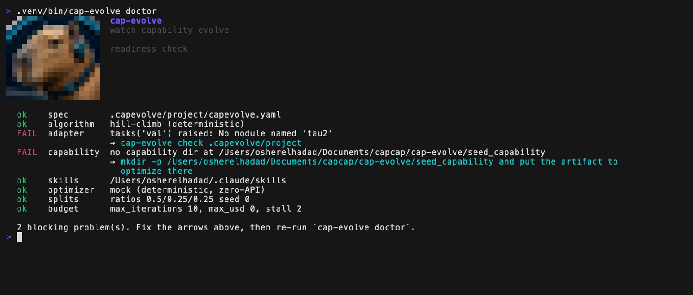
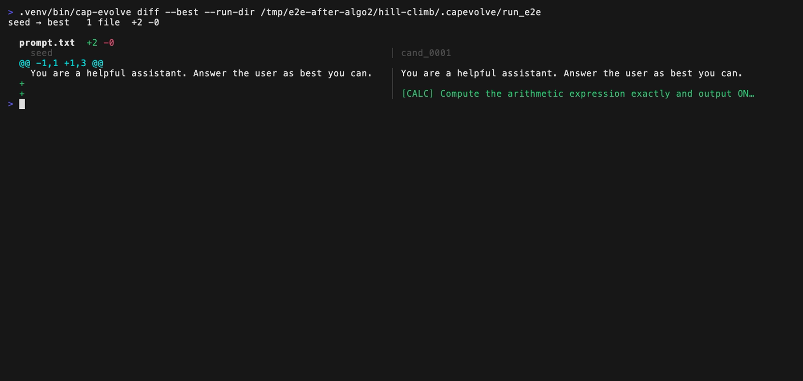
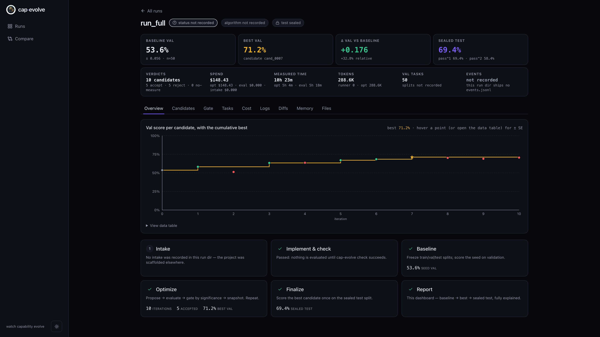

cap-evolve onboarding · Chapter 8 of 8
Debugging, observability and testing
How to see what a run did, find why it went wrong, and prove your change with the right tests.
20 minutes Level: deep and practical Part A: observe · Part B: test
[0:00–0:40] Welcome to the last chapter. Chapters 1 to 7 explained what cap-evolve is and how a run works inside. This chapter is about your daily work. Part A is observability and debugging: how to look at a run that is live, a run that finished, and a run that crashed. Part B is the test environment: how the tests are organized, how CI runs them, and how this team expects you to test a change before review. We end with a plan for your first week. Everything here is practical. You can try each command on the toy example on your own laptop, with no API key.
[0:00–0:40] ברוכים הבאים לפרק האחרון. בפרקים 1 עד 7 ראינו מה זה cap-evolve ואיך run עובד מבפנים. הפרק הזה הוא על העבודה היומיומית שלכם. חלק A הוא observability ו-debugging: איך מסתכלים על run שרץ עכשיו, על run שהסתיים, ועל run שקרס. חלק B הוא סביבת הבדיקות: איך הטסטים מאורגנים, איך ה-CI מריץ אותם, ומה הצוות מצפה שתריצו לפני review. נסיים בתוכנית לשבוע הראשון. הכול פרקטי, ואפשר לנסות כל פקודה על ה-toy example במחשב שלכם, בלי API key.
What you will learn
Part A · Observe and debug
events.jsonl: the one source of truthCLI views: doctor, watch, replay, diff, dashboard
Read a run dir by hand
Logs, env vars, crashes, transcripts
Resume, telemetry, top troubleshooting
Debug the core locally with toy_calc
Part B · The test environment
core/tests: ~250 files, one rule per fileCommands, fixtures, test kinds
CI workflows and when they run
Model providers for real runs
The dev skills: open-pr → testing → review
Write a test · your first week
[0:40–1:30] Here is the plan. On the left, Part A. We start with one file, events.jsonl, because every view of a run reads it. Then we go through the CLI commands that show a run, the dashboard, and how to read a run directory by hand when you have one specific question. Then logging, crash evidence, resume and telemetry, and a recipe to debug the core in your editor. On the right, Part B. We look at the test folder and its naming rule, the commands, the kinds of tests, the GitHub workflows, and the model providers for paid runs. Then the repository's own development skills, which tell you which tests a change needs. We finish with how to write a test and a first-week plan.
[0:40–1:30] זו התוכנית. משמאל, חלק A. מתחילים מקובץ אחד, events.jsonl, כי כל תצוגה של run קוראת אותו. אחר כך פקודות ה-CLI שמציגות run, ה-dashboard, ואיך קוראים run dir ביד כשיש שאלה ספציפית. אחר כך logging, ראיות לקריסה, resume ו-telemetry, ומתכון ל-debug של ה-core מתוך ה-editor. מימין, חלק B: תיקיית הטסטים וכלל השמות שלה, הפקודות, סוגי הטסטים, ה-workflows ב-GitHub, וה-model providers ל-runs בתשלום. אחר כך ה-development skills של הריפו, שאומרים איזה טסטים כל שינוי צריך. נסיים באיך כותבים טסט ובתוכנית לשבוע הראשון.
One source of truth: events.jsonl
phase scripts
harness.py · gate.py
one process per phase
log_event()
events.jsonl
append-only, one JSON
object per line
eventstream.py
follow_events · format_event
tail · run --follow
dashboard SSE /stream
dashboard.reduce_run()
the projection: graph + summary
(+ dashboard_views.enrich)
tui.render_frame
watch · run --tui · replay
capevolve_dashboard
runs.py → /api/runs/{id}
write_dashboard()
static dashboard.html
RunObserver.on_event
capevolve_telemetry (optional)
MLflow · OpenTelemetry
Source: core/cap_evolve/rundir.py (log_event), eventstream.py, dashboard.py, tui.py, observer.py
[1:30–2:50] This is the most important picture of Part A. Every phase script writes events through one method, RunDir.log_event. It appends one JSON line with a time stamp and a kind, for example evaluate, step, gate_warning or finalize. Nothing else is the source of truth for "what happened".
Three kinds of readers use it. First, eventstream.py follows the file by byte offset. It feeds cap-evolve tail, run --follow, and the dashboard's live SSE route. Second, dashboard.reduce_run folds all events and run files into one projection. The terminal UI and the web dashboard both render that same projection, so they cannot disagree. Third, optional observers get each event after it is written, for MLflow or OpenTelemetry. An observer that crashes is caught and never stops the run.
[1:30–2:50] זו התמונה הכי חשובה בחלק A. כל phase script כותב events דרך מתודה אחת, RunDir.log_event. היא מוסיפה שורת JSON אחת עם זמן ו-kind, למשל evaluate, step, gate_warning או finalize. זה מקור האמת היחיד ל"מה קרה".
יש שלושה סוגי קוראים. ראשון, eventstream.py עוקב אחרי הקובץ לפי byte offset, ומזין את cap-evolve tail, את run --follow ואת ה-SSE של ה-dashboard. שני, dashboard.reduce_run מקפל את כל ה-events וקבצי ה-run ל-projection אחד. ה-TUI וה-dashboard מציגים את אותו projection, ולכן הם לא יכולים לסתור זה את זה. שלישי, observers אופציונליים מקבלים כל event אחרי שנכתב, ל-MLflow או OpenTelemetry. observer שקורס נתפס ולא עוצר את ה-run.
CLI tools for looking at a run
Command Use it when Notes cap-evolve doctorBefore a run: is anything missing? ok / warn / FAIL rows, each with a fix · --json cap-evolve check [dir]The hard gate on the adapter must print {"ok": true} run --follow · run --tui [--diff]Watch the run you start view on stderr, final JSON on stdout tail · watch [--diff]Attach to a run that is already going exit 0 done · 2 bad dir · 3 idle timeout replay <run_dir> · replay --demoRe-watch a recorded run --speed N · demo needs no API keydiff --best · diff cand_0003What did a candidate change? vs parent · --vs X · --stat · --files dashboard --base .capevolveExplore runs in the browser port 7878 · --export RUN_DIR → html
Source: core/cap_evolve/cli.py (_cmd_doctor, _cmd_watch, _cmd_replay, _cmd_diff, _cmd_dashboard)
[2:50–4:00] These are the commands you will use most. doctor is a readiness check before you spend money. check is the hard gate from chapter 5: it runs the adapter and refuses to continue on a stub or a non-deterministic score.
For a live run, add --follow for one line per event, or --tui for a full-screen view. Both write to stderr, so stdout stays the machine-readable final JSON. If the run is already going, maybe in CI or in another shell, use tail or watch. They have useful exit codes: 3 means the run went quiet, not that it finished.
replay feeds a recorded events.jsonl through the same view. diff shows what a candidate changed, read from its snapshot under candidates/. dashboard starts the web UI.
[2:50–4:00] אלה הפקודות שתשתמשו בהן הכי הרבה. doctor הוא בדיקת מוכנות לפני שמוציאים כסף. check הוא ה-hard gate מפרק 5: הוא מריץ את ה-adapter ומסרב להמשיך אם יש stub או score לא דטרמיניסטי.
ל-run חי מוסיפים --follow לשורה לכל event, או --tui לתצוגה במסך מלא. שניהם כותבים ל-stderr, כך ש-stdout נשאר ה-JSON הסופי. אם ה-run כבר רץ, למשל ב-CI או ב-shell אחר, משתמשים ב-tail או watch. ל-exit codes יש משמעות: 3 אומר שה-run השתתק, לא שהוא הסתיים.
replay מזין events.jsonl מוקלט לאותה תצוגה. diff מראה מה candidate שינה, מתוך ה-snapshot שלו תחת candidates/. dashboard מפעיל את ה-web UI.
doctor before, diff after

cap-evolve doctor: two FAIL rows, each with an arrow to the fix.

cap-evolve diff c1_verify --unified 2: the edit, read from the snapshot.
Exit codes are part of the contract: doctor returns 1 when any row is FAIL; diff with no candidate lists the ids and suggests --best.
[4:00–4:50] Two real screenshots. On the left, doctor on a fresh project. It checks the spec, the algorithm, the adapter, the capability folder, the skills folder, the optimizer, the splits and the budget. Here the adapter still has three IMPLEMENT ME methods and the seed capability folder is empty. Each row tells you exactly what to do next.
On the right, diff. It compares two candidate snapshots: by default the candidate and its parent, with --best the seed and the winner. The layout picks unified or side by side from your terminal width. Use --stat when you only want per-file line counts. This is the fastest way to answer "what did the optimizer actually do".
[4:00–4:50] שני צילומי מסך אמיתיים. משמאל, doctor על פרויקט חדש. הוא בודק את ה-spec, ה-algorithm, ה-adapter, תיקיית ה-capability, תיקיית ה-skills, ה-optimizer, ה-splits וה-budget. כאן ל-adapter יש עוד שלוש מתודות IMPLEMENT ME, ותיקיית ה-seed ריקה. כל שורה אומרת בדיוק מה לעשות.
מימין, diff. הוא משווה שני snapshots: כברירת מחדל ה-candidate וההורה שלו, ועם --best את ה-seed מול המנצח. התצוגה בוחרת unified או side by side לפי רוחב הטרמינל. --stat נותן רק ספירת שורות לכל קובץ. זו הדרך המהירה לענות על "מה ה-optimizer באמת עשה".
The live view: run --tui, watch, replay
header spec, split, gate mode, trials, spend
cumulative best step chart of the best val
lineage ✓ accept · ✗ reject · ~ indecisive, with the gate reason
per-task val heatmap: candidate × task
activity the last events, one line each
Source: core/cap_evolve/tui.py · demo data: core/cap_evolve/demo_session (synthetic)
[4:50–5:50] This screenshot is cap-evolve replay --demo. It replays a synthetic session that ships inside the package, so you can see the UI with no key. The banner says the numbers are synthetic.
The design rule in tui.py is one sentence: the renderer is a pure function of one state object. render_frame(reduced, size) touches no terminal, no clock and no file. So watch, run --tui and replay differ only in what feeds events into the same reducer. That is also why it is easy to unit test, see test_tui.py.
Read the lineage panel first. It shows each candidate, its val with standard error, the delta to its parent, and the gate's reason string. Note cand_0004: indecisive, "not a reject". Chapter 6 explained why that matters.
[4:50–5:50] הצילום הזה הוא cap-evolve replay --demo. הוא מריץ מחדש session סינתטי שנמצא בתוך החבילה, כך שאפשר לראות את ה-UI בלי key. הבאנר אומר שהמספרים סינתטיים.
כלל העיצוב ב-tui.py הוא משפט אחד: ה-renderer הוא פונקציה טהורה של state אחד. render_frame(reduced, size) לא נוגע בטרמינל, בשעון או בקבצים. לכן watch, run --tui ו-replay שונים רק במה שמזין events לאותו reducer. בגלל זה גם קל לבדוק אותו, ראו test_tui.py.
תקראו קודם את ה-lineage. הוא מראה כל candidate, את ה-val שלו עם standard error, את ה-delta מול ההורה, ואת הסיבה של ה-gate. שימו לב ל-cand_0004: indecisive, "not a reject". בפרק 6 הסברנו למה זה חשוב.
The dashboard: live server or one static file
dashboard_launch.maybe_launch() spawns python -m capevolve_dashboard.server · never breaks the run
↓
FastAPI · app.py /api/runs/{id} · /diff/{cand} · /stream (SSE)
↓
React SPA · buildTabs() tabs come from what the run recorded
No backend? report writes run_dir/dashboard.html. Rebuild it: cap-evolve dashboard --export RUN_DIR

Always: Overview · Candidates · Gate · Cost · Logs · Memory · Files
When recorded: Tasks · Diffs · Trajectories · Config · Timeline · Optimizer story
Per algorithm: Rounds · GEPA · SkillOpt · Weakness graph · Process
Source: core/cap_evolve/dashboard_launch.py · dashboard/backend/capevolve_dashboard/app.py · dashboard/frontend/src/routes/RunDeepDive.tsx
[5:50–7:00] The core is pure stdlib, so it never imports the web stack. Instead, dashboard_launch.maybe_launch starts the optional capevolve-dashboard package as a detached process on port 7878. If the package is not installed, it returns "skipped" with a hint, and the run continues. You saw that in the toy run output: dashboard_server: skipped.
The backend calls the same reduce_run. The frontend builds its tabs in buildTabs from what the run actually recorded. A missing signal means a missing tab, never an empty or invented one. For example, a gepa run gets a GEPA tab, and the Tasks tab appears only when per-task data exists.
Without a server, open dashboard.html in the run dir. It is self-contained, so you can attach it to an issue.
[5:50–7:00] ה-core הוא stdlib בלבד, ולכן הוא לא מייבא את ה-web stack. במקום זה, dashboard_launch.maybe_launch מפעיל את החבילה האופציונלית capevolve-dashboard כתהליך נפרד על פורט 7878. אם החבילה לא מותקנת, הוא מחזיר "skipped" עם רמז, וה-run ממשיך. ראינו את זה בפלט של ה-toy run: dashboard_server: skipped.
ה-backend קורא לאותו reduce_run. ה-frontend בונה את הטאבים ב-buildTabs לפי מה שה-run באמת הקליט. signal חסר פירושו טאב חסר, אף פעם לא טאב ריק או מומצא. למשל, run של gepa מקבל טאב GEPA, וטאב Tasks מופיע רק כשיש נתונים לכל task.
בלי שרת, פותחים את dashboard.html ב-run dir. הוא עומד בפני עצמו, אפשר לצרף אותו ל-issue.
Read a run dir by hand: start from the question
Question Open first Then Why was this candidate rejected? events.jsonl → kind: step (accept, reason, broke, fixed)rejected.jsonl · graph.jsonlWhat did the optimizer see? work/<cand>/prompt.txt · INSTRUCTIONS.mdLEDGER.md · JOURNAL.md · RUNMAP.md · trajectories/What did it change? cap-evolve diff <cand>candidates/<cand>/ · git log in the run dirWhy did a task fail? rollouts/val/<task>__<cand>__t0.jsoneval_index.jsonlWhat did it cost? state.json → spent (usd, optimizer_usd, tokens)evaluate / step events · Cost tabWhat is the final result? report.md · final.jsonbaseline.json · splits.json
python3 -c "import json; [print(e['candidate'], e['accept'], e['reason']) for e in
map(json.loads, open('events.jsonl')) if e['kind'] == 'step']"
[7:00–8:10] The dashboard is good for browsing. When you have one precise question, open the files directly. These names come from a real toy_calc run directory.
Why rejected: look at the step event for that candidate. It has accept, the gate reason, the parent val, and the lists of tasks it broke and fixed. What the optimizer saw: the work/<cand> folder is the optimizer's working dir, with the rendered prompt.txt, the instructions and the memory files from chapter 2. Why a task failed: each rollout is one file, named task, candidate and trial. Cost: state.json has the spent block, split into runner, optimizer and intake.
The one-liner at the bottom prints every gate decision of a run. In the toy run it shows cand_0001 True, then two rejects with Δ = 0.
[7:00–8:10] ה-dashboard טוב לשיטוט. כשיש שאלה מדויקת אחת, פותחים את הקבצים ישירות. השמות כאן לקוחים מ-run dir אמיתי של toy_calc.
למה נדחה: מסתכלים על ה-event מסוג step של ה-candidate. יש בו accept, את ה-reason של ה-gate, את ה-val של ההורה, ואת רשימות ה-tasks ששבר ותיקן, broke ו-fixed. מה ה-optimizer ראה: התיקייה work/<cand> היא תיקיית העבודה שלו, עם prompt.txt, ההוראות, וקבצי הזיכרון מפרק 2. למה task נכשל: כל rollout הוא קובץ, לפי task, candidate ו-trial. עלות: ב-state.json יש בלוק spent, מחולק ל-runner, optimizer ו-intake.
ה-one-liner למטה מדפיס כל החלטת gate. ב-toy run הוא מראה cand_0001 True ואחריו שני rejects עם Δ = 0.
Log levels and useful environment variables
# cap_evolve/__init__.py, at import time
CAPEVOLVE_LOG_LEVEL =DEBUG # per-task/per-trial
# same thing, for the run's child processes:
cap-evolve run --log-level DEBUG
# unset = Python default (WARNING), no surprise
# output for a host that embeds cap_evolve Logging goes to stderr . stdout stays the JSON contract between skill scripts and core.
Tested by core/tests/test_log_level.py (in a subprocess)
Variable Effect CAPEVOLVE_SKILLS_DIRwhich skills tree to use CAPEVOLVE_WORKERSeval concurrency CAPEVOLVE_EVAL_PROGRESS_INTERVALeval_progress every N s (30)CAPEVOLVE_ERRORED_TRIAL_POLICYdrop | failCAPEVOLVE_OPTIMIZER_TRANSCRIPTfull optimizer output file CAPEVOLVE_NO_FAULTHANDLERturn off crash dumps CAPEVOLVE_MOCK_SCRIPTedit script for the mock optimizer
[8:10–9:00] cap-evolve had no debug mode until issue 589. Now CAPEVOLVE_LOG_LEVEL is read once in cap_evolve/__init__.py. If it is set, it calls logging.basicConfig with that level. If it is unset, nothing changes. The --log-level flag on run only sets this variable, so every phase subprocess inherits it. At DEBUG you get a line per task and trial from harness.evaluate_candidate.
The table lists the variables you will touch most when debugging. CAPEVOLVE_EVAL_PROGRESS_INTERVAL=0 gives one progress event per rollout, which tests use. CAPEVOLVE_WORKERS=1 makes evaluation serial, which helps with a debugger. There are about 25 CAPEVOLVE_* variables in the core; grep for them when you need one.
[8:10–9:00] עד issue 589 לא היה ל-cap-evolve מצב debug. היום CAPEVOLVE_LOG_LEVEL נקרא פעם אחת ב-cap_evolve/__init__.py. אם הוא מוגדר, נקרא logging.basicConfig עם הרמה הזו. אם לא, שום דבר לא משתנה. הדגל --log-level של run רק מגדיר את המשתנה הזה, כך שכל phase subprocess יורש אותו. ב-DEBUG מקבלים שורה לכל task ו-trial מתוך harness.evaluate_candidate.
הטבלה מראה את המשתנים שתשתמשו בהם הכי הרבה ב-debugging. CAPEVOLVE_EVAL_PROGRESS_INTERVAL=0 נותן progress event לכל rollout, והטסטים משתמשים בזה. CAPEVOLVE_WORKERS=1 הופך את ה-evaluation לסדרתי, וזה עוזר עם debugger. יש בערך 25 משתני CAPEVOLVE_* ב-core, תעשו grep כשצריך.
Crashes, optimizer stderr and transcripts leave evidence
A phase crashes
steps run with capture_output
_step_failure: returncode + signal name + hint_clip keeps the head and the tail of stderrfaulthandler on: native SIGSEGV prints a stack
The optimizer talks
stderr of a successful step is kept
file: work/<cand>.optimizer.stderr
event: optimizer_stderr with a tail
failures: optimizer_error in the step
What did the agent do?
run-optimizer --transcript PATHuses the registry row's transcript_flag
every turn and tool call, secrets redacted
agent mode: host/transcript.jsonl
Source: core/cap_evolve/cli.py (_step_failure, _clip) · harness.py (_record_optimizer_stderr) · skills/optimizers/run-optimizer/scripts/run.py · tests: test_crash_visibility.py, test_optimizer_subprocess_silence.py, test_optimizer_transcript.py
[9:00–9:50] Many of these rules come from real CI runs that failed without a clue. Run 30608405812 died with return code minus 11 and nothing else. The stderr window held only the tail, which was 40 kilobytes of routine scoring chatter. Now the failure record names the signal, gives a hint per signal, and keeps the first and last part of stderr. faulthandler is enabled at import, so a segfault in a C extension prints a Python stack.
Second, an optimizer that exits 0 but explains a problem on stderr used to be silent. Now that text goes to a file next to the candidate and into an event. Third, one run spent four hours doing nothing, and only 800 characters of output were kept. So --transcript now records the full stream of turns.
[9:00–9:50] הרבה מהכללים כאן באו מ-runs אמיתיים ב-CI שנכשלו בלי שום רמז. run 30608405812 מת עם return code מינוס 11 ותו לא. חלון ה-stderr החזיק רק את הזנב, 40 קילובייט של רעש scoring. היום רשומת הכישלון נותנת את שם ה-signal, רמז לכל signal, ושומרת את ההתחלה והסוף של stderr. faulthandler מופעל ב-import, כך ש-segfault ב-C extension מדפיס stack של Python.
שנית, optimizer שיוצא עם 0 אבל מסביר בעיה ב-stderr היה שקט. היום הטקסט נשמר לקובץ ליד ה-candidate ול-event. שלישית, run אחד בזבז ארבע שעות בלי לעשות כלום, ונשמרו רק 800 תווים. לכן --transcript מקליט היום את כל ה-turns.
Resume an interrupted run · send events to telemetry
Resume
cap-evolve run --resume --run-ts demo \
--max-iterations 20 # optional: extend
reopens the run dir, keeps state.json
skips the baseline if it is done
continues at iteration N+1 from the best
already finalized? only rebuilds the report
tests: test_resume.py
Telemetry (optional)
# capevolve.yaml
observers :
- backend : mlflow
tracking_uri : http://localhost:5000
- backend : otel
baseline load_observers
→
state file observer_state.json
→
later phases from_state
pip install capevolve-telemetry[all] · capevolve_telemetry/config.py
[9:50–10:40] Long runs get interrupted: a crash, a CI timeout, a pod eviction. Re-run the same command with --resume. With --run-ts you name the run; without it, the newest run under the base is used. It keeps rollouts, accepted candidates, spend and git history. The sealed test is never scored twice: if the run had already finalized, resume only regenerates the report. Explicit budget flags extend the budget, so you can keep climbing.
Telemetry lives in a separate package, capevolve_telemetry, with MLflow and OpenTelemetry observers. You add an observers list to the spec. The baseline phase builds the observers and saves their state to observer_state.json. Each later phase is a new process, so it rebuilds them from that state. That is how one MLflow run spans all phases.
[9:50–10:40] runs ארוכים נקטעים: קריסה, timeout ב-CI, pod eviction. מריצים שוב את אותה פקודה עם --resume. עם --run-ts בוחרים את ה-run; בלעדיו, נלקח ה-run החדש ביותר. נשמרים ה-rollouts, ה-candidates שהתקבלו, ההוצאה, וה-git history. ה-test החתום לא נמדד פעמיים: אם ה-run כבר עשה finalize, ה-resume רק בונה מחדש את ה-report. דגלי budget מפורשים מרחיבים את התקציב.
ה-telemetry נמצא בחבילה נפרדת, capevolve_telemetry, עם observers ל-MLflow ול-OpenTelemetry. מוסיפים רשימת observers ל-spec. ה-phase של baseline בונה את ה-observers ושומר את ה-state שלהם ב-observer_state.json. כל phase אחר הוא תהליך חדש, ולכן בונה אותם מחדש מה-state. כך run אחד ב-MLflow מכסה את כל ה-phases.
Top issues from docs/TROUBLESHOOTING.md
Symptom Cause and fix cap-evolve: command not foundcore not installed in this env → pip install ./core toy run does not print test_reward 1.0 run from the repo root; same check: pytest core/tests/test_e2e_slice.py check prints {"ok": false}the hard gate works: IMPLEMENT ME stub, unstable tasks(), random score() missing credentials at runtime optimizer and runner credentials are separate ; runner ones go in .env TestSealError · "test already scored"by design: test is scored once per run → start a new run dir a real gain was rejected Δ ≤ k·SE: add num_trials, lower gate_k_se, or accept noise dashboard does not launch pip install ./dashboard/backend, or open dashboard.html
[10:40–11:20] These are the issues new users report most. Read the full file once, it is short. Three of them are worth a comment. First, a red check is not a bug in cap-evolve. It is the gate refusing to spend money on an adapter that cannot give a stable score. Second, the credentials for the optimizer, for example a logged-in Claude Code, say nothing about the runner model. They are checked separately. Third, a "rejected gain" is usually the gate doing its job. On a small val split, a gain of one task is often inside the noise. The fix is more evidence, more trials or more tasks, not a weaker gate. When none of these match, open an issue with the exact command and output.
[10:40–11:20] אלה הבעיות שמשתמשים חדשים מדווחים עליהן הכי הרבה. תקראו את הקובץ המלא פעם אחת, הוא קצר. שלוש מהן שוות הערה. ראשית, check אדום הוא לא באג ב-cap-evolve. זה ה-gate שמסרב להוציא כסף על adapter שלא נותן score יציב. שנית, ה-credentials של ה-optimizer, למשל Claude Code מחובר, לא אומרים כלום על מודל ה-runner. בודקים אותם בנפרד. שלישית, "שיפור שנדחה" הוא בדרך כלל ה-gate שעושה את העבודה. על val קטן, שיפור של task אחד הוא לרוב בתוך הרעש. הפתרון הוא יותר ראיות, יותר trials או יותר tasks, לא gate חלש יותר. אם שום דבר לא מתאים, פותחים issue עם הפקודה והפלט המדויקים.
Recipe: debug the core locally
# 1. editable install, in a venv
pip install -e "./core[dev]" -e "./dashboard/backend[dev]"
# 2. zero-API run: toy_calc + mock optimizer
bash benchmarks/toy/examples/calc/run.sh
# 3. look at it
cap-evolve replay $WORKDIR/.capevolve/run_demo --speed 20
# 4. set breakpoint() in harness.evaluate_candidate
# or gate.decide, then run ONE in-process test:
python -m pytest core/tests/test_e2e_slice.py \
-k test_full_slice -s
# 5. or stop at the first failure
python -m pytest core/tests/test_e2e_slice.py -x --pdb
Why not a breakpoint in cap-evolve run? Each phase is a skills/phases/*/scripts/run.py subprocess with capture_output. pdb never gets your terminal.
test_e2e_slice.py calls harness.baseline, run_step and finalize in your process . Only the mock optimizer is a subprocess.
run --plan-only prints the phase sequence: intake → implement-and-check → baseline → hill-climb → finalize → report.
[11:20–12:30] Here is a recipe that works on day one. Install the core and the dashboard backend in editable mode. Run the toy example: it uses the deterministic mock optimizer, which applies the edit script in mock_script.json. Baseline val is 0.0, and the test reward is 1.0. The script prints its temporary working dir, so you can replay the run.
Now the important detail. cap-evolve run starts every phase as a subprocess and captures its output. A breakpoint() there will hang or be swallowed. So debug through a test instead. test_e2e_slice.py drives the real toy adapter through baseline, one step and finalize in the test process. Put a breakpoint in harness.evaluate_candidate or in gate.decide, run it with -s, and you can step through one full iteration. Set CAPEVOLVE_WORKERS=1 if threads get in the way.
[11:20–12:30] הנה מתכון שעובד מהיום הראשון. מתקינים את ה-core וה-dashboard backend במצב editable. מריצים את ה-toy example: הוא משתמש ב-optimizer הדטרמיניסטי mock, שמפעיל את ה-edit script שב-mock_script.json. ה-baseline val הוא 0.0 וה-test reward הוא 1.0. הסקריפט מדפיס את תיקיית העבודה הזמנית, אז אפשר לעשות replay.
עכשיו הפרט החשוב. cap-evolve run מפעיל כל phase כ-subprocess ותופס את הפלט שלו. breakpoint() שם ייתקע או ייבלע. לכן עושים debug דרך טסט. test_e2e_slice.py מריץ את ה-toy adapter האמיתי דרך baseline, step אחד ו-finalize בתוך תהליך הטסט. שמים breakpoint ב-harness.evaluate_candidate או ב-gate.decide, מריצים עם -s, ועוברים צעד צעד על iteration שלם. אם threads מפריעים, CAPEVOLVE_WORKERS=1.
Part B · How the tests are organized
conftest.py # root: intentionally empty
core/tests/ # 248 test_*.py files
├── conftest.py # sets 2 spreadsheetbench env vars
├── fixtures/ # recorded runs, gate decisions,
│ # microcases, run_schema_v2 …
├── ao2_fakes.py · p2_fakes.py # shared fakes
├── test_a_failed_gate_is_not_a_verdict.py
├── test_infra_errors_not_zeros.py
├── test_e2e_slice.py
└── test_spreadsheetbench_*.py # 23 files
dashboard/backend/tests/ # + conftest make_run
dashboard/frontend/src/test/ # 30 vitest files
capevolve_telemetry/tests/
ci/benchmarks/lib/ # pytest + test_*.sh
The file name is the rule
test_an_unresolved_gate_is_not_a_rejection.py
test_pass_k_undefined.py
The docstring tells the incident: run id, issue number, what broke.
Plain pytest
No custom markers. testpaths = ["tests"] in core/pyproject.toml.
[12:30–13:20] Part B. Most tests live in core/tests, about 250 files, flat. Many file names are a full sentence that states a rule: "a failed gate is not a verdict", "infra errors are not zeros". When such a test fails, its name already tells you which promise you broke. Open the docstring: it usually names the CI run or the issue that caused it, and explains the bug. These docstrings are some of the best documentation in the repo.
Shared data lives in fixtures: recorded runs, gate decisions, micro cases. The root conftest.py is empty on purpose. The core one only sets two environment variables for the spreadsheetbench tests. There are no custom markers and no slow tier inside pytest; slow, paid work lives in separate CI workflows.
[12:30–13:20] חלק B. רוב הטסטים נמצאים ב-core/tests, בערך 250 קבצים, בלי תתי-תיקיות. הרבה משמות הקבצים הם משפט שלם שמנסח כלל: "a failed gate is not a verdict", "infra errors are not zeros". כשטסט כזה נכשל, השם כבר אומר איזו הבטחה שברתם. תפתחו את ה-docstring: הוא בדרך כלל מציין את ה-CI run או ה-issue שגרם לו ומסביר את הבאג. ה-docstrings האלה הם מהתיעוד הכי טוב בריפו.
נתונים משותפים נמצאים ב-fixtures: runs מוקלטים, החלטות gate, micro cases. ה-conftest.py בשורש ריק בכוונה. זה של ה-core רק מגדיר שני משתני סביבה לטסטים של spreadsheetbench. אין markers מיוחדים ואין שכבת slow בתוך pytest; עבודה איטית ובתשלום נמצאת ב-workflows נפרדים.
Run the unit tier: the same commands as CI
# Python: core + dashboard backend
pip install -e "./core[dev]" -e "./dashboard/backend[dev]"
python -m pytest core/tests -q
python -m pytest dashboard/backend/tests -q
# one file, one test, or by keyword
python -m pytest core/tests/test_gate_epsilon_constraint.py -q -k "rejects"
# skills: manifest + authoring lint
python skills/_registry/build_manifest.py skills
python skills/_registry/lint_skills.py skills
# frontend: build, vitest, and commit dist/
cd dashboard/frontend && npm ci && npm run build && npm test
Zero API. No test needs a key or the network.
[dev] extrasopenpyxl and pandas, or xlsx tests skip silently.
Full suite is slow (~30+ min on a laptop). Use -k or one file while you work.
Source: .claude/skills/testing/SKILL.md · .github/workflows/ci.yml
[13:20–14:00] These are the exact commands of tier 1 in the testing skill, and they mirror ci.yml. Note the [dev] extras. Without openpyxl and pandas, every test that builds a real spreadsheet calls importorskip and skips. That once hid a whole test file in CI. The comment in core/pyproject.toml tells this story.
The full core suite is slow: on a laptop it can take half an hour or more, because many tests start real subprocesses: phase scripts, the mock optimizer, the CLI. While you work, run one file or use -k. Before you push, run the full set. If you change the frontend, you must rebuild and commit dist/, because the backend serves the built files and CI fails on a stale bundle.
[13:20–14:00] אלה בדיוק הפקודות של tier 1 ב-skill של testing, והן משקפות את ci.yml. שימו לב ל-[dev]. בלי openpyxl ו-pandas, כל טסט שבונה spreadsheet אמיתי עושה importorskip ומדלג. פעם זה הסתיר קובץ טסטים שלם ב-CI. ההערה ב-core/pyproject.toml מספרת את הסיפור.
ה-suite המלא של ה-core איטי: על לפטופ זה יכול לקחת חצי שעה ויותר, כי הרבה טסטים מפעילים subprocesses אמיתיים: phase scripts, ה-mock optimizer, ה-CLI. בזמן עבודה מריצים קובץ אחד או -k. לפני push מריצים הכול. אם שיניתם את ה-frontend, חייבים לבנות מחדש ולעשות commit ל-dist/, כי ה-backend מגיש את הקבצים הבנויים וה-CI נכשל על bundle ישן.
Kinds of tests and what each one protects
Unit · rule one behavior, one file: test_pass_k_undefined.py, test_gate_*.py
E2E slice test_e2e_slice.py: toy_calc + mock, check → baseline → step → finalize; seal holds
Parity test_*_parity.py: every algorithm gets the same optimizer context and writes the same iteration record
Docs = code test_advertised_counts.py, test_skill_code_claims.py: numbers and claims match the repo
Skill lint lint_skills.py is blocking; test_skill_authoring_lint.py tests the lint itself
Dashboard backend: pytest + make_run fixture · frontend: vitest + Testing Library
Benchmark adapters test_spreadsheetbench_*, test_tau2_* in core/tests · appworld, parsec in their own tests/
Zero-API runs ci/e2e_all_algorithms.sh: all algorithms on toy_calc
[14:00–14:50] Here are the kinds. Most tests are rule tests: one behavior per file. The e2e slice is the proof that the whole pipeline works with no model. Parity tests exist because algorithms drifted apart: gepa once skipped the shared step and wrote no step event and no journal. The parity tests run each algorithm and compare.
A special family keeps the docs honest. test_advertised_counts.py counts SKILL.md files and registry rows on disk and compares them with the numbers in README and on the site. test_skill_code_claims.py pins sentences in skills to code behavior. The skill lint applies the same authoring rules that cap-evolve sells to users. Note: the appworld and parsec example tests are not in ci.yml; run them by hand when you touch those adapters.
[14:00–14:50] אלה הסוגים. רוב הטסטים הם rule tests: התנהגות אחת לקובץ. ה-e2e slice הוא ההוכחה שכל ה-pipeline עובד בלי מודל. טסטי parity קיימים כי ה-algorithms התפצלו: gepa פעם דילג על ה-step המשותף ולא כתב event מסוג step ולא journal. טסטי ה-parity מריצים כל algorithm ומשווים.
משפחה מיוחדת שומרת על התיעוד כן. test_advertised_counts.py סופר קבצי SKILL.md ושורות registry על הדיסק ומשווה למספרים ב-README ובאתר. test_skill_code_claims.py מצמיד משפטים ב-skills להתנהגות בקוד. ה-skill lint מחיל את אותם כללי כתיבה ש-cap-evolve מוכר למשתמשים. שימו לב: הטסטים של appworld ו-parsec לא נמצאים ב-ci.yml; תריצו אותם ביד כשנוגעים ב-adapters האלה.
CI: which workflow runs what, and when
Workflow Trigger What it runs ci.ymlevery PR + push to main pytest core + backend · frontend build + vitest + stale dist/ · toy_calc · install smoke · lychee links + CLI subcommands · skill lint · codespell · ci lib tests integration-tests.ymldispatch · PR label integration-test one task end to end: tau2 · tau2_sierra(_blackbox) · appworld, self-hosted runner benchmarks.ymldispatch · PR label benchmark-<tier>-<bench> curated tiers smoke / pilot / full / full_verified, per benchmark and algorithm codeql.ymlPR, push, weekly security scan pages.ymlpush to site/**, after Benchmarks build and deploy the site sync-model-lists.ymlschedule, twice an hour sync model pickers with served models DCO (probot app) every PR every commit needs Signed-off-by → git commit -s
Also: Bob workflows (test/fix PR, label issues and PRs) · benchmark-history-prune.yml
[14:50–15:50] The free tier is ci.yml. It runs on every pull request and every push to main, with parallel jobs. Two jobs need a word. "Toy example" asserts the outcome, baseline 0.0 to test reward 1.0, not only the exit code. "Install smoke" runs install.sh into a clean home and runs toy_calc from the install, outside the repo, because an install that cannot find the optimizer exits 0 with no improvement.
The paid tiers do not run by default. integration-tests.yml runs one task per leg on a self-hosted runner, and only for known collaborators. benchmarks.yml runs the curated tiers. Both start by manual dispatch or by a PR label. DCO is not a workflow file; it is the probot app. Always commit with -s.
[14:50–15:50] השכבה החינמית היא ci.yml. היא רצה על כל pull request ועל כל push ל-main, עם jobs במקביל. שני jobs שווים מילה. "Toy example" בודק את התוצאה, baseline 0.0 ל-test reward 1.0, ולא רק את ה-exit code. "Install smoke" מריץ install.sh לתוך home נקי ומריץ toy_calc מההתקנה, מחוץ לריפו, כי התקנה שלא מוצאת את ה-optimizer יוצאת עם 0 בלי שום שיפור.
השכבות בתשלום לא רצות כברירת מחדל. integration-tests.yml מריץ task אחד לכל leg על self-hosted runner, ורק ל-collaborators מוכרים. benchmarks.yml מריץ את ה-tiers המלאים. שניהם מופעלים ב-dispatch ידני או ב-label על ה-PR. DCO הוא לא קובץ workflow, זו אפליקציית probot. תמיד עושים commit עם -s.
Real runs: model providers and their order
1 · RITS
ibm-rits/…
no budget
2 · ETE-INT
ibm-ete-int/…
the team's main gateway
3 · ETE
ibm-ete/…
own budget · last choice
cannot serve
over budget
R=skillberry-ai/cap-evolve
gh workflow run "Integration tests" \
--repo $R -f bench=tau2_sierra
gh workflow run "Benchmarks" \
--repo $R -f benchmark=tau2 -f tier=smoke
pick a plain name (claude-opus-5): CI tries the order
prefixed id pins one gateway, no fallback
one provider per run, chosen before it starts
rule lives in ci/benchmarks/model_catalog.txt
[15:50–16:40] Paid runs reach models through three IBM providers. RITS first, because it has no budget. Then ETE-INT, the team's main gateway. ETE only when ETE-INT cannot serve the model or is over budget. You do not choose by hand: pick a plain model name in the dispatch form, and the preflight in ci_setup.sh tries each provider in the order from model_catalog.txt. It sends one real completion and keeps the first that answers.
The choice is made once per run. If a budget runs out in the middle, the run fails instead of switching. That keeps baseline and candidates on the same gateway, so the comparison stays fair. After the run, the job summary and the run record show agent_provider, optimizer_provider and why other providers were skipped. Note: the skill text says -f bench=tau2 for Benchmarks, but the workflow input is named benchmark.
[15:50–16:40] runs בתשלום מגיעים למודלים דרך שלושה providers של IBM. קודם RITS, כי אין לו budget. אחר כך ETE-INT, ה-gateway הראשי של הצוות. ETE רק כש-ETE-INT לא יכול להגיש את המודל או שעבר את ה-budget. לא בוחרים ביד: בוחרים שם מודל פשוט בטופס ה-dispatch, וה-preflight ב-ci_setup.sh מנסה כל provider לפי הסדר ב-model_catalog.txt. הוא שולח completion אמיתי אחד ושומר את הראשון שעונה.
הבחירה נעשית פעם אחת לכל run. אם budget נגמר באמצע, ה-run נכשל ולא מחליף. כך ה-baseline וה-candidates נמדדים על אותו gateway, וההשוואה הוגנת. אחרי ה-run, ה-job summary וה-run record מראים agent_provider, optimizer_provider, ולמה providers אחרים דולגו. הערה: ב-skill כתוב -f bench=tau2 ל-Benchmarks, אבל שם ה-input ב-workflow הוא benchmark.
The repo's development skills: which tests a change needs
open-pr
branch · identity · track
testing
code: unit tier always + real run if it can change one
dashboard-change
frontend/src only: build + before/after screenshots
docs-change
docs only: link check, no run
review-cycles
3 rounds × 2 reviewers
Tier 2 trigger: harness or loop, an adapter, gate / seal / splits, the CLI, CI benchmark dispatch. Run zero-API first: toy_calc, init + check, ci/e2e_all_algorithms.sh.
Report evidence on the PR: run link, leg and tier, provider, best_val, test_reward, test_delta, cost.
Source: .claude/skills/{open-pr,testing,dashboard-change,docs-change,review-cycles}/SKILL.md · CLAUDE.md
[16:40–17:30] The repo has its own development skills in .claude/skills. They are written for an agent, but they are also the house rules for people. Every task starts at open-pr: a worktree from fresh main, your own git identity, and a track. The track depends on the file list. Code goes to testing. Frontend-only goes to dashboard-change. Docs-only goes to docs-change. A PR can need more than one track.
"Unit tier always, real end-to-end run when the change can affect one" means this. Tier 1 is the CI commands, plus a new or updated test for any logic change; a missing test is a blocker. Tier 2 is needed when the change touches what a real run does, scores or costs. Start with the free zero-API runs. Dispatch a paid run only when those cannot show the effect. Then review-cycles runs three rounds of two independent reviewers.
[16:40–17:30] לריפו יש development skills משלו ב-.claude/skills. הם כתובים ל-agent, אבל הם גם כללי הבית לאנשים. כל משימה מתחילה ב-open-pr: worktree מ-main עדכני, ה-git identity שלכם, ובחירת track. ה-track נקבע לפי רשימת הקבצים. קוד הולך ל-testing. frontend בלבד הולך ל-dashboard-change. תיעוד בלבד הולך ל-docs-change. PR יכול לדרוש יותר מ-track אחד.
"Unit tier always, real end-to-end run when the change can affect one" פירושו כך. tier 1 הוא פקודות ה-CI, ועוד טסט חדש או מעודכן לכל שינוי לוגיקה; טסט חסר הוא blocker. tier 2 נדרש כשהשינוי נוגע במה ש-run אמיתי עושה, מודד או עולה. מתחילים מה-runs החינמיים בלי API. מריצים run בתשלום רק כשהם לא מראים את ההשפעה. אחר כך review-cycles מריץ שלושה סבבים של שני reviewers בלתי תלויים.
How to write a new test
# core/tests/test_pass_k_undefined.py (shortened)
"""pass^k is OMITTED (N/A) when k > num_trials,
never emitted as 0.0. Honesty guard for issue #112."""
from cap_evolve.loop import aggregate_scores
from cap_evolve.types import Score
def test_single_trial_omits_k2 ():
scores = [Score(task_id="t1" , reward=1.0 ),
Score(task_id="t2" , reward=1.0 )]
r = aggregate_scores("val" , scores, ks=(1 , 2 ))
assert r.pass_k == {"1" : 1.0 } # NOT {"2": 0.0}
assert "2" not in r.to_dict()["pass_k" ]
Name the file as the rule it protects.
Docstring: the incident, run id or issue.
Build tiny inputs: Score, RunDir.create(tmp_path, …).
Test the boundary too (k = n and k = n + 1).
Zero API: toy adapter + mock optimizer.
Global side effects (logging)? Use a subprocess.
[17:30–18:20] Here is a short, real test from the repo. Issue 112: a run with one trial reported pass^2 as 0.0, which reads as "zero percent reliable". The truth is that the statistic is not defined with one trial. The fix omits the key. The test builds two Score objects by hand, calls aggregate_scores, and checks that the key "2" is absent, also after serialization.
The same file also tests the exact boundary, k equal to n and k equal to n plus one, because a reviewer showed that a wrong boundary passed the first tests. That is the style here: small inputs, the rule in the name, the story in the docstring, and the edge case pinned. For run-level behavior, use tmp_path with RunDir.create and the toy adapter, as test_e2e_slice.py does. For process-wide state, run a subprocess, as test_log_level.py does.
[17:30–18:20] הנה טסט קצר ואמיתי מהריפו. issue 112: run עם trial אחד דיווח pass^2 כ-0.0, וזה נקרא כמו "אפס אחוז אמינות". האמת היא שהסטטיסטיקה לא מוגדרת עם trial אחד. התיקון משמיט את המפתח. הטסט בונה שני אובייקטי Score ביד, קורא ל-aggregate_scores, ובודק שהמפתח "2" לא קיים, גם אחרי serialization.
אותו קובץ בודק גם את הגבול המדויק, k שווה n ו-k שווה n ועוד אחד, כי reviewer הראה שגבול שגוי עבר את הטסטים הראשונים. זה הסגנון כאן: קלטים קטנים, הכלל בשם, הסיפור ב-docstring, ומקרה הקצה מקובע. להתנהגות ברמת run, משתמשים ב-tmp_path עם RunDir.create וה-toy adapter, כמו ב-test_e2e_slice.py. ל-state גלובלי של התהליך, מריצים subprocess, כמו ב-test_log_level.py.
Your first week
Day Do Done when Day 1 Clone, venv, editable install · doctor · toy_calc · replay --demo · diff --best you see baseline 0.0 → test 1.0 Day 2 Read docs/ARCHITECTURE.md, types.py, rundir.py, harness.py (ch. 4–5) you can explain one iteration Day 3 Read gate.py, splits.py, stats.py, one algorithm run.py (ch. 6–7) · open the toy run dir by hand you can say why cand_0002 was rejected Day 4 Run the full unit tier · step through test_e2e_slice.py in a debugger · read 5 rule-named tests all green on your machine Day 5 Small PR via open-pr: a fix or a missing test · git commit -s · review-cycles PR open, CI green, DCO green
[18:20–19:20] Here is a plan for your first week. Day 1 is setup and the zero-API tour: install, run doctor, run toy_calc, replay the demo, and diff the winner. Day 2 and day 3 follow the deep chapters of this course. Read the files in the order of the chapters: object model, then the run, then the gate and the algorithms. At the end of day 3, open the toy run directory and answer one question by hand, for example why cand_0002 was rejected. The answer is in its step event: Δ was 0, and the gate needs a strict gain.
Day 4 is the test suite. Run everything, then step through the e2e slice in a debugger. Day 5 is a small PR. A good first PR is a missing test for a rule you found while reading. Go through open-pr, sign off every commit, and run the review cycles.
[18:20–19:20] הנה תוכנית לשבוע הראשון. יום 1 הוא התקנה וסיור בלי API: התקנה, doctor, toy_calc, replay של ה-demo, ו-diff של המנצח. ימים 2 ו-3 הולכים לפי הפרקים העמוקים של הקורס. קוראים את הקבצים לפי סדר הפרקים: object model, אחר כך ה-run, אחר כך ה-gate וה-algorithms. בסוף יום 3, פותחים את ה-run dir של ה-toy ועונים על שאלה אחת ביד, למשל למה cand_0002 נדחה. התשובה ב-event מסוג step שלו: Δ היה 0, וה-gate דורש שיפור ממשי.
יום 4 הוא ה-test suite. מריצים הכול, ואז עוברים על ה-e2e slice צעד צעד ב-debugger. יום 5 הוא PR קטן. PR ראשון טוב הוא טסט חסר לכלל שמצאתם בזמן הקריאה. עוברים דרך open-pr, עושים sign-off לכל commit, ומריצים את ה-review cycles.
Key takeaways · where to read more
events.jsonl is the truth; TUI and dashboard share reduce_runStart from the question, open the right file
Debug through an in-process test, not through cap-evolve run
A test file name is a rule; its docstring is the incident
Unit tier always; real run when the change can affect one
Plain model name; CI picks RITS → ETE-INT → ETE
This is the last chapter. Next: your first PR.
Topic Read Troubleshooting docs/TROUBLESHOOTING.mdRun schema, views docs/RUN_SCHEMA_V2.mdLive views eventstream.py · tui.py · dashboard.pyTesting rules .claude/skills/testing/SKILL.mdCI and providers .github/workflows/ci.yml · ci/benchmarks/README.mdTelemetry capevolve_telemetry/README.mdContributing, DCO CONTRIBUTING.md · CLAUDE.md
[19:20–20:00] To close. Every view of a run reads one append-only file, and the terminal and the web share one projection, so trust them equally. When you debug, start from the exact question and open the matching file. To step through the core, use an in-process test, because the CLI runs phases as subprocesses. Treat test names as the list of promises the project makes. Run the unit tier for every change, and add a real run only when the change can affect one, starting with the free toy runs. The table on the right is your reading list for this chapter. This is the end of the course. Thank you, and we look forward to your first PR.
[19:20–20:00] לסיכום. כל תצוגה של run קוראת קובץ אחד שרק מוסיפים לו, והטרמינל וה-web חולקים projection אחד, אז אפשר לסמוך על שניהם באותה מידה. כשעושים debug, מתחילים מהשאלה המדויקת ופותחים את הקובץ המתאים. כדי לעבור צעד צעד על ה-core, משתמשים בטסט בתוך התהליך, כי ה-CLI מריץ phases כ-subprocesses. שמות הטסטים הם רשימת ההבטחות של הפרויקט. מריצים unit tier לכל שינוי, ומוסיפים run אמיתי רק כשהשינוי יכול להשפיע עליו, ומתחילים מה-toy runs החינמיים. הטבלה מימין היא רשימת הקריאה לפרק הזה. זה סוף הקורס. תודה, ומחכים ל-PR הראשון שלכם.